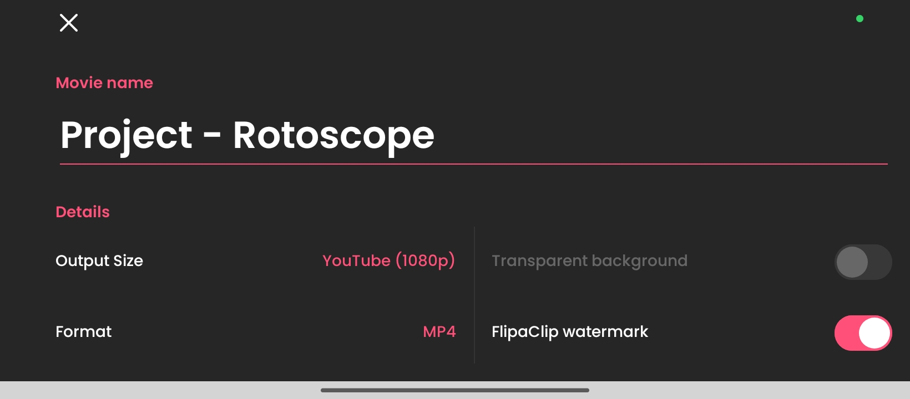
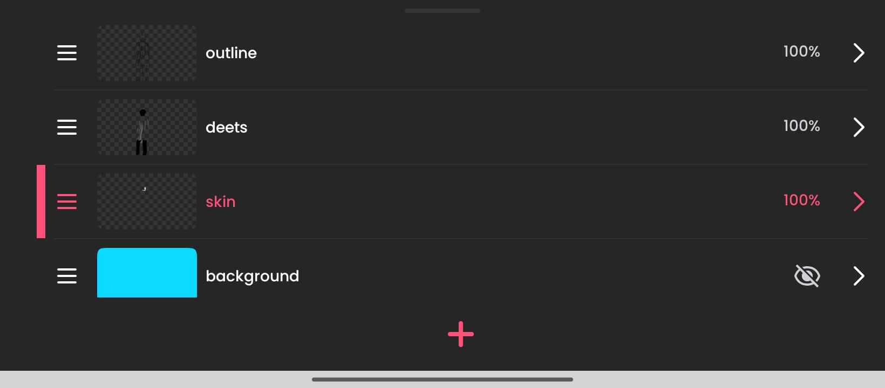

Section 01
What is Rotoscoping?
Rotoscoping is an animation technique in which animators trace over footage, frame by frame, to produce realistic action. Originally patented by Max Fleischer in 1917, the method has been widely used in film, television, and visual effects to achieve smooth, lifelike movement.
In this project, the technique is used as a creative exercise to learn the fundamentals of animation timing, color layering, and digital illustration within the context of the Multimedia and Authoring curriculum.
Project Info
- Subject: Multimedia and Authoring — TUP Taguig
- Reference video (original): https://www.youtube.com/watch?v=f6YX3W85vsw
- Embedding note: The original YouTube source is linked only and not embedded due to copyright restrictions.
- Rotoscoping tool: Manually drawn on phone using FlipaClip (1080p landscape)
- Editing tool: Microsoft Clipchamp (assembly, color grading, audio sync)
- Technique: Separate layers — outline, skin, details, background
My Rotoscoping Output
Reference Video
Disclaimer: The original source used for reference is https://www.youtube.com/watch?v=f6YX3W85vsw. It is linked for attribution and academic reference only and is not embedded on this page due to copyright restrictions. All rights to the original content belong to the respective creator.
How I Did It
Process & Method
Step 01
Find & Download Reference Video
Search for a suitable reference video with clear, readable motion. Choose one that has consistent lighting and a subject that moves at a manageable pace for frame-by-frame tracing. Download it in the highest quality available.

Step 02
Set Up in FlipaClip
Import the reference footage into FlipaClip on your phone. Set the canvas to 1080p landscape orientation to prepare for the frame-by-frame manual drawing process.

Step 03
Trace Outlines & Fill Colors
For each frame, trace the subject using separate layers: outline layer, skin/fill layer, detail layer, and background layer. Work in 5–10 second segments to maintain consistency and avoid fatigue.

Step 04
Continue Tracing Remaining Segments
Proceed with the remaining footage segments. Maintain consistent color palette and line weight throughout to ensure the final output feels unified across all frames.
Step 05
Assemble & Edit in Microsoft Clipchamp
Export all traced frames and import them into Microsoft Clipchamp. Sequence the clips, adjust timing, add background music or sound effects, apply color grading to the overall output, and synchronize any audio elements.
Step 06
Export & Review Final Output
Export the final video from Microsoft Clipchamp in 1080p. Review the output against the reference to check for consistency in motion, coloring, and timing. Make any final adjustments before submission.
Documentation
Progress by Week
Weekly video progress will be embedded here as they become available throughout the semester.